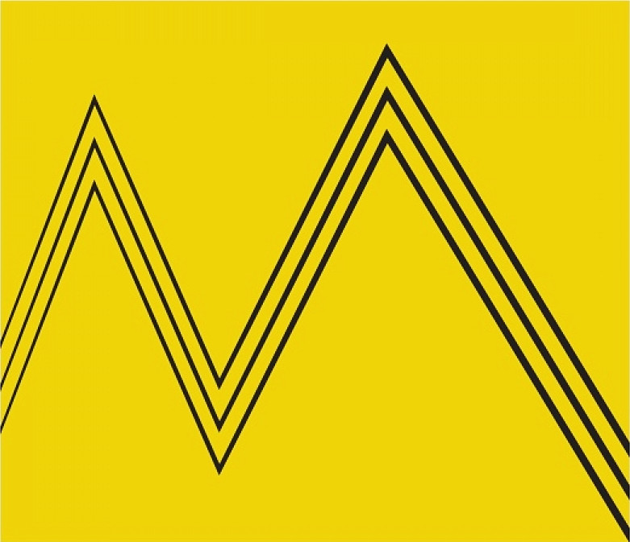

Zemaljski Muzej

Zemaljski muzej Bosne i Hercegovine u Sarajevu najstarija je muzejska institucija u Bosni i Hercegovini, osnovana 1. februara 1888, za vrijeme austro-ugarske vladavine.
U početku je bio smješten u neuvjetnim prostorijama da bi regulacijskim planom iz 1909.
Bila načinjena skica muzeja i predviđena njegova izgradnja u centralnom dijelu Sarajeva, na današnjem Trgu Bosne i Hercegovine.
Arhitekt Karlo Paržik uradio je projekt za zgradu muzeja, koja se sastoji od četiri zasebna paviljona, međusobno povezana terasama, s unutrašnjim atrijem, gdje je smješten botanički vrt.
Zgrada je rađena u neorenesansnom stilu. Zanimljivo je da je to jedina zgrada muzeja u jugoistočnoj Evropi namjenski građena za tu svrhu.

Zemaljski muzej uspio je sakupiti dobar dio kulturnog i nacionalnog naslijeđa zemlje i svih njenih naroda. Eksponati su razvrstani po odjeljenjima (arheološko, etnološko i odjeljenje prirodnih nauka) u nekoliko zbirki (folklorna, numizmatička, prirodoslovna, prahistorijska, antička i druge),
a najznačajniji muzejski eksponat jest poznata Sarajevska hagada, tradicionalna jevrejska knjiga, koju su Sefardi donijeli u Sarajevo po svom progonu iz Španije.
Muzej je teško oštećen u toku ratnih sukoba u Bosni i Hercegovini od 1992. do 1995, a tadašnji direktor, Rizo Sijarić,
poginuo je prilikom granatiranja muzeja u decembru 1993.
Iako je problem nepotpunog i nepravovremenog finansiranja bio evidentan kroz poslijeratne godine rada muzeja, 4. oktobra 2012.
Muzej je zatvoren za javnost. Zaposlenici su nastavili, bez bilo kakvih sredstava, voditi brigu o muzejskim eksponatima i zbirkama.
Muzej je za javnost ponovo otvoren 15. septembra 2015. Vrijeme za posjete jest od utorka do petka od 10 do 19, a vikendom od 10 do 14 sati.
Botanički vrt je smješten u centralnom dijelu kompleksa Zemaljskog muzeja. Jedini je spomenik te vrste u Sarajevu. Osnovao ga je 1913.
Istaknuti botaničar Karlo Maly. Površina mu iznosi 14.270 m2 i u njemu se uzgaja više od 3.000 biljnih vrsta. Sadrži vrlo vrijedne zbirke: endemskih vrsta, tercijarnih relikata, florističkih rijetkosti.
U lijepom ambijentu na jednom mjestu mogu se vidjeti brojne egzotične vrste drveća kao što su japanska trešnja (Prunus serrulata), mamutovac (Sequoia), ginko (Ginkgo biloba) i druge.
Posebnu atrakciju predstavlja fontana u centralnom dijelu vrta, okružena bujnom vegetacijom, koja doprinosi tome da vrt na posjetioca ostavlja utisak romantičnog cvjetnog parka.
Vrt posjeduje veoma vrijedan herbarij. Autori tih vrijednih kolekcija su Otto Blau, Otto Moellendorff, Florian Hofmann, Erich Brandis, Franjo Fiala, Günther Beck von Mannagetta i Karlo Maly, a zatim Živko Slavnić i Čedomil Šilić.
Otvoreni depo u najširem smislu predstavlja zaseban prostor unutar muzejske cjeline u kojem su predstavljeni predmeti koji nisu uključeni u strukture stalnih postavki, ali su ipak dostupni široj publici. Takvi depoi mogu služiti i kao studijski prostori za istraživače, te istovremeno pružiti posjetiteljima osjećaj da su "zavirili" u neke od muzejskih tajni.
U sklopu stalne postavke "Bosna i Hercegovina u prethistoriji" nalazi se otvoreni depo u kojem su grobovi s lokaliteta Arheološko područje Donja Dolina kod Gradiške. Koncepcijom otvorenih depoa posjetiocima je pružena prilika da vide i pet grobova (dva iz sojenica i tri s Greda), iz perioda od 6. do 4. st. p. n. e.
U otvorenom depou predstavljena je i grčka keramika s matičnog područja (Atika, Beocija, Mala Azija, grčki otoci), koja pripada zbirci stranih predmeta i nije uključena u novi stalni postav.
Kalcit Kristal pronadjen na Trebevicu
Osnivanjem Muzejskog društva u Sarajevu 1884. godine počeo je rad na utemeljenju Biblioteke Zemaljskog muzeja BiH,
kao prve naučne biblioteke na tlu Bosne i Hercegovine. Biblioteka je počela sa radom 1888. godine, a od 1913. Kada je Muzej uselio u nove zgrade, Biblioteka je smještena u prostorije u kojima se i danas nalazi.
Biblioteka Zemaljskog muzeja BiH je organizovana kao specijalna naučna biblioteka, sa oko 300 000 svezaka publikacija (knjiga, časopisa, novina).
Građa koju posjeduje Biblioteka je sistematski prikupljana 129 godina i odnosi se na oblasti arheologije, historije, etnologije, folkloristike, mineralogije, geologije, botanike, zoologije i muzeologije.
Stare zbirke Biblioteke prikupljene u periodu Austro-Ugarske i Kraljevine Jugoslavije raritetnog su karaktera.

Komisija za očuvanje nacionalnih spomenik Bosne i Hercegovine donijela je 31. jula 2018. godine odluku da se muzej proglasi za nacionalni spomenik Bosne i Hercegovine.
Ovu odluku Komisija je donijela u sljedećem sastavu: Amir Pašić, Goran Milojević i Radoje Vidović (predsjedavajući).
Nacionalni spomenik čine paviljoni arheologije, etnologije, prirodnih nauka, upravna zgrada, botanička bašta, sjeverni ulazni plato, sjeverna, istočna, zapadna i južna hortikulturna površina, te izvorni namještaj:
•11 vitrina sa sandukom i elementom za izlaganje u obliku slova L u upravnoj i zgradi prirodnih nauka
•visoki sto, kabinet, staklena vitrina, ormar, četiri stola i 20 stolica u upravnoj zgradi
•dve vitrine, dve zidne vitrine, četiri zidne vitrine sa sandukom, dve staklene vitrine sa postoljem,
dvije dvostruke vitrine, četiri dvostrane metalne vitrine, dve vitrine oktogonalne osnove, dve četverostrane vitrine pravougaone osnove i 12 dvostranih drvenih vitrina u zgradi prirodnih nauka
Nacionalni spomenik BiH

Prahistorija
Zbirka Odsjeka za prethistoriju se sastoji od preko 70000 inventarnih jedinica, tj.
arheoloških predmeta, izrađenih od keramike, kremena, kamena, kosti, metala i stakla. Zastupljene su epohe paleolitika, neolitika, eneolitika,
bronzanog i željeznog doba,
a materijal potječe iz svih dijelova Bosne i Hercegovine.
Novi stalni postav Bosna i Hercegovina u prethistorijsko doba otvoren je 20. 10. 2021. godine,
prvi put nakon gotovo 30 godina. Iz jedne od najvećih i najstarijih prethistorijskih zbirki u ovom dijelu Evrope izdvojeno je oko 3000 arheoloških nalaza koji kroz posebno naglašene tematske cjeline pružaju hronološki uvid u razvoj i slijed kultura prethistorijskih razdoblja.
Posuda iz prahistorijske zbirke

Antika
Zbirka Odsjeka za antiku obuhvata oko 25.000 arheoloških predmeta rimske provincijalne kulture na tlu Bosne i Hercegovine od 1. do 6. stoljeća nove ere.
Dio predmeta pripada ranoj historiji kršćanstva. Bogata numizmatička zbirka posebno osvjetljava ekonomski razvoj Bosne i Hercegovine u doba Rimske imperije.
Stalna postavka Bosna i Hercegovina u antičko doba daje cjelovitu sliku kulturnohistorijskog razvoja na ovom području u doba rimske uprave:
doba ranog Rimskog carstva ili Principata i doba kasnog Carstva ili Dominata.
Rimska svjetiljka

Srednji vijek
Zbirka Odsjeka za srednji vijek obuhvata oko 11.500 predmeta srednjovjekovne kulture Bosne i Hercegovine u razdoblju od 6. do 15. stoljeća.
Stalna postavka Bosna i Hercegovina u srednjem vijeku smještena je u tri dvorane. U prvoj dvorani predstavljeno je razdoblje od 6. do sredine 12. stoljeća, u drugoj dvorani razdoblje od 12. do 15.
stoljeća, a u trećoj dvorani izloženi su spomenici arhitekture i skulpture od 12. do 15. stoljeća.
Zemaljski muzej BiH ima dvije izložbe stećaka postavljene na otvorenom prostoru.

Arheologija
Arheološke zbirke prate sve aspekte života čovjeka (naselja i nastambe, svakodnevni život, privreda, umjetnost, duhovnost, religija itd.),
na prostorima Bosne i Hercegovine, od starijeg kamenog doba do kasnog srednjeg vijeka. Predmeti u zbirkama najvećim su dijelom prikupljeni terenskim istraživanjima a u manjoj mjeri otkupom i poklonima.
Zlatni prsten kralja Tvrtka I Kotromanića

Masivni zlatni prsten čiji je obruč sastavljen od tri tordirane žice. Na prednjoj strani prstena je velika kruna sa masivnim gorskim kristalom.
Kruna se sastoji sa redom stubića unaokolo kojih ima osam a tri nedostaju. Oni imaju izgled stubova omotani žicom prema gore se sužuju.
Ova tehnika rada koja se na prstenu oponaša kao livenje je vizantska.
Etnologija
Odjeljenje za etnologiju sakuplja, čuva, izlaže i proučava sve segmente materijalne, duhovne i socijalne kulture naroda Bosne i Hercegovine.
Posjeduje bogat fundus muzejskog materijala, koji je pohranjen i tematski razvrstan u zbirke. Ima jednu stalnu izložbenu postavku, a svake godine nudi nekoliko tematskih izložbi.
Prikupljanje etnološkog materijala otpočelo je sa osnivanjem Zemaljskog muzeja 1888. godine, kada su otkupljeni veoma vrijedni etnološki predmeti (npr. kompleti narodnih nošnji).
Neposredno nakon osnivanja, Odjeljenje za etnologiju je bilo integrirano s Odjeljenjem za arheologiju, ali se izdvojilo iz njega četiri godine kasnije
Abadžijske makaze

Makaze imaju velike drške i duge nožice, a izrađene su od čelika tehnikom kovanja. S jedne strane ukrašene su urezanim slovima, a s druge vegetabilnim motivima.
Žljebovi su bili ispunjeni zlatom koje je s većeg dijela površine ispalo iz ureza. Na makazama je urezana i godina izrade - 1895., a bile su u upotrebi do 1955. godine u abadžijskoj porodici Majstorović.